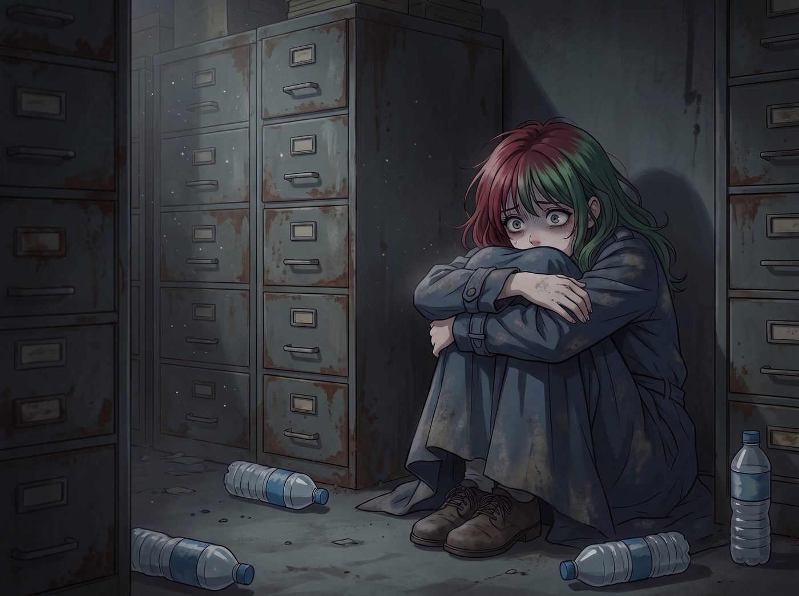

不良資產回收站

二號車廂已經停擺整整四十八小時了。
不是因為缺乏物資，也不是因為什麼突擊檢查，而是因為這座鋼鐵堡壘的大腦消失了。
兩天前，Lily 穿上一件熨燙得沒有一絲褶皺的深藍色風衣，把頭髮梳得一絲不苟，平靜地向眾人請假，說要回西雅圖市區和父母吃一頓定期的家庭晚餐。那是她每季度的合規性孝道義務。
然而，她沒有回來。電話關機，GPS訊號消失，她連營地的定位共享都自己手動關掉了。
「她到底去哪了？！」Chloe 暴躁地在車廂裡走來走去，像一頭失去方向的困獸，「她就像從這個世界上蒸發了一樣！」
Max 坐在 Lily 空蕩蕩的工作站前，心臟揪得緊緊的。她手裡握著一張前天早上拍下的寶麗來——照片裡的 Lily 站在車廂門口，戴著圓框眼鏡，低頭看著手錶，表情完美得像一個即將上台演講的機器人。
但 Max 身為攝影師的直覺告訴她，照片裡 Lily 握著門把手的那隻手，指關節因為過度用力而泛白。
「我去找她。」Max 咬了咬牙，指尖撫過照片。
周圍的空氣開始扭曲，色彩褪去又重組。Max 的意識墜入了時間的漩渦。
一、四十八小時前
Max 站在 Lily 的辦公區旁，小心地藏在陰影裡。
這個時間點，Chloe 在外面修車，Kate 去了鎮上採買。車廂裡只有 Lily 一個人。
她正在打電話，手機開著擴音。電話那頭，是一個冰冷、尖銳、充滿控制欲的中年女聲，伴隨著一個男人沉重的嘆息。
「Lily，妳到底要在外面跟那群不三不四的人鬼混到什麼時候？我們花那麼多錢讓妳去學法律和行政，不是讓妳去給一群無業遊民當保姆的！」
「母親，我目前參與的是聯邦合作專案，這對我未來的履歷……」Lily 的聲音依然軟糯，但已經失去了一貫的從容，帶著一絲不易察覺的顫抖。
「閉嘴！什麼聯邦專案？別以為我們不知道妳在做什麼荒唐事！妳就不能像個正常的成年人一樣，找一份正經工作，交幾個體面的朋友嗎？」
電話那頭的父親重重地嘆了一口氣：「Lily，我們老了。昨天我還覺得心臟不舒服。我們不知道明天和棺材哪個先來……妳就非要這樣折磨我們嗎？如果我們就這樣走了，妳讓我們怎麼閉上眼睛？妳是要我們死不瞑目嗎？」
這不是溝通，這是精準的、核彈級的情感勒索。
Max 在陰影裡看到，Lily 的身體猛地瑟縮了一下，彷彿被一根無形的鞭子狠狠抽中。她那層刀槍不入的行政黑魔法裝甲，在這種長年累月、以血緣和死亡為彈藥的精神操控面前，像紙糊的一樣碎裂。
「我……我今晚會準時到的。對不起，父親，母親。」
電話掛斷了。
Lily 坐在椅子上，呼吸急促。她沒有哭，而是像一台瀕臨當機的電腦，拉開抽屜，拿出一本黑色的、邊緣已經翻得起毛的筆記本。
Max 悄悄湊近。那不是工作日誌。上面用工整到近乎偏執的字跡，記錄著從她十歲起，父母對她說過的每一句貶低、每一場情感勒索、每一次以愛為名的精神凌遲——日期、原話、她當時的應對方式，一條一條，像一本帳。
在最新一頁，Lily 顫抖著寫下：
『系統承載力已達百分之百。他們要我死。我無法修復這個Bug。若晚餐後系統仍無法恢復，啟動四零四隔離協議：西雅圖南區，廢棄地下檔案庫，第十七號儲物間。』
隨後，她把筆記本鎖回抽屜，換上那件深藍色風衣，準時出門赴那頓晚餐。
Max 在時空崩塌前明白了：她還是去了。即使剛被這樣對待，她還是準時去了。而那頓晚餐，就是壓垮駱駝的最後一根稻草。
二、第十七號儲物間
猛禽皮卡在暴雨中發出怒吼，撞開了西雅圖南區一座廢棄工業園區的鐵絲網。
Chloe 提著那根沉重的管鉗，一言不發地走在最前面。Victoria 踩著平底靴，Kate 抱著一個保溫罐，Max 緊緊跟在後面，手裡還攥著那張寶麗來。四個人在潮濕陰冷的地下室裡狂奔，直到一扇鏽跡斑斑的鐵門前。門上用紅漆寫著「17」。
「哐！」Chloe 揮動管鉗，砸碎了掛鎖。
門被推開了。裡面沒有燈，只有幾排生滿鐵鏽的檔案櫃。
在最後一排櫃子後面的黑暗角落裡，她們找到了 Lily。
那是一個與平日運籌帷幄的黑魔法師截然不同的身影。她縮在地上，雙臂緊緊抱著膝蓋，頭埋在臂彎裡。她沒有戴眼鏡，深藍色的風衣沾滿了灰塵。身邊散落著幾瓶根本沒打開過的礦泉水——她整整兩天沒吃任何東西。
聽到腳步聲，Lily 渾身劇烈地顫抖了一下。她抬起頭，那雙失去焦距的眼睛裡充滿了恐懼。
「Lily……」Kate 的眼淚瞬間掉了下來，她跪到 Lily 身邊，伸手想去抱她。
「別碰我！」
Lily 發出一聲沙啞的、近乎失控的尖叫，拚命往後縮，直到背死死抵住冰冷的牆壁。
三、還不清的債
「對不起……對不起……」她的大腦顯然還處在極度的應激狀態，竟然開始用那套行政語言來掩飾自己的破碎，「我的情緒閥門發生了未經授權的洩漏。我無法控制變量。我是一個……不合格的資產。他們說得對，我不正常，我是一個失敗的產品……」
她語無倫次地喃喃自語，眼淚終於決堤，大顆大顆地砸在地上：
「我以為我可以計算出所有風險……但我算不出他們什麼時候會死。如果他們死了，我的報表上就永遠欠著一筆還不清的債。我不知道……該怎麼做這張表了……」
Chloe 的眼眶紅得像要滴血。
她沒有像平時那樣大吼大叫，而是把管鉗扔在地上，一屁股坐在 Lily 對面的泥地上，跟她平視。
「可是我讓妳們擔心了……」Lily 抓著自己的頭髮，自責讓她幾乎無法呼吸，「我擅離職守四十八小時……耗費了團隊的燃油和搜索資源……我是個累贅。我把一切都搞砸了，就像他們說的那樣……」
「妳說妳是不良資產，是吧？」Chloe 開口了，聲音沙啞而溫柔，這大概是她這輩子最溫柔的時刻，「老娘在阿卡迪亞灣的檔案裡，是個被開除、有案底的輟學生。Max 是個永遠在猶豫的廢柴。Victoria 是個自私的資本家。Kate 也曾經在最低谷的時候，想過放棄一切。」
她頓了頓，直直地看著 Lily：「我們這節車廂，從頭到尾就是一個不良資產回收站。妳不是什麼失敗的產品，實習生。妳是我們的人。」
四、永遠不會滿足的人
「閉嘴，小書呆子，聽她說完。」
Victoria 也蹲了下來。這位平時高高在上的名媛，眼神冰冷卻透著一種殘酷的清醒。
「我太了解妳父母那種人了。」Victoria 咬著牙，「不管是上流社會還是中產階級，那些把孩子當成投資回報率、動不動就拿死不瞑目來威脅妳的父母，他們愛的從來不是妳，是那份能拿出去炫耀的完美履歷。」
她伸出手，強硬地把 Lily 緊抓著頭髮的手掰開，握進自己手裡：
「妳沒有搞砸任何事。妳是整個西海岸最可怕的行政天才，妳能把官僚系統當猴耍。妳唯一的錯誤，就是一直試圖去滿足兩個永遠不會滿足的人。」
Kate 打開保溫罐，裡面是熱騰騰的無麩質雞湯。她小心地舀起一勺，輕輕吹涼，遞到 Lily 乾裂的嘴唇邊。
「喝一點吧，Lily。妳的胃需要能量。二號車廂也需要妳。」
Lily 看著遞到嘴邊的勺子，又看著圍在身邊的四個人。沒有指責，沒有要求她成為一個正常的成年人，更沒有人拿死亡來勒索她。
她張開嘴，喝下了那口雞湯。溫熱的液體滑進胃裡，她終於放聲大哭出來。不再是壓抑的啜泣，而是一個年輕的女孩被折磨了許多年之後，徹底崩潰的嚎啕大哭。
Max 站在一旁，手裡握著那張寶麗來，沒有舉起相機。
她知道，這不是一張需要被記錄的照片，而是一道深深的傷疤。
五、回程
回程的路上，猛禽皮卡開得很慢。
Lily 裹著毛毯，靠在 Kate 的肩膀上沉沉地睡著了。她的眉頭依然緊緊皺著，手裡死死攥著 Victoria 的衣角。
坐在副駕駛的 Max 看著窗外飛逝的雨景，心裡非常清楚：這不是童話故事。
那些年復一年被灌進腦子裡的毒素、那些用愛包裝的詛咒，不是一碗雞湯和一個擁抱就能撫平的。Lily 醒來後，依然會為今天的崩潰感到強烈的羞恥和自責；她依然會在某個深夜，因為父母的一則簡訊而驚醒，害怕那兩副棺材，害怕那筆永遠還不清的債。
創傷不會被瞬間治癒，就像那些被撕裂過的時間線，永遠不會真正恢復原狀。
但 Max 轉過頭，看著專心開車、眼神堅毅的 Chloe，又看了看後座上緊緊依偎在一起的三個女孩。
沒關係的，Max 心想。
我們治不好她的過去，但我們可以用整節車廂的溫度，一點一點覆蓋她的未來。如果她覺得自己是這個系統的錯誤，那我們就陪她一起，當這個世界上最頑固的Bug。
車窗外，暴雨漸漸停了。二號車廂的輪廓在奧林匹亞半島的迷霧中若隱若現，那是她們千瘡百孔、卻堅不可摧的家。